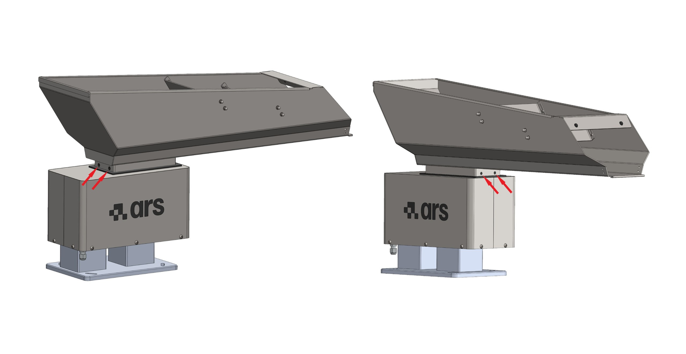

[MEC] Maintenance and Troubleshooting#
Warning
Carry out maintenance operations when the machine is switched off.
Warning
Maintenance operations must be carried out by qualified and authorized personnel.
Machine maintenance includes the interventions (inspection, verification, checking, adjustment and replacement) that become necessary as a result of normal use.
Guidelines for correct maintenance:
The assigned personnel must be well trained and have a thorough knowledge of the accident-prevention regulations. Unauthorized personnel must stay outside the work area during the operations.
Cleaning and adjustment activities are carried out only and exclusively during maintenance, with the machine stopped, de-energized and with the electrical panel disconnected.
Important
If in doubt, do not operate. Contact the Manufacturer for the necessary clarifications.
Attention
Repair or maintenance work not contained in this manual may be carried out only with the prior authorization of ARS S.r.l. No liability for damage to persons or property can be attributed to ARS S.r.l. for interventions other than those described or carried out in ways other than those indicated.
Operational classification of maintenance#
Maintenance type |
Description |
|---|---|
Routine maintenance |
Preventive operations to ensure the proper operation of the machine over time (inspection, checking, adjustment, cleaning and lubrication). |
Extraordinary maintenance |
Corrective interventions as needed (overhaul, repair, restoration of nominal conditions or replacement of a faulty, defective or worn assembly). |
Safety Warnings#
Attention
Before starting any maintenance work on the machine, disconnect and lock out all energy sources, and put the moving assemblies that make it up into a safe locked condition. Affix the sign “Machine under maintenance - do not switch on the power” at the main switch.
Attention
When the machine is under maintenance, to prevent it from being accidentally started, affix signs reading: “WARNING! Machine Under Maintenance”.
Routine Maintenance#
Routine maintenance keeps the mechanical condition and the cleanliness of the machine under control. The intervals indicated refer to normal operating conditions.
Important
For the routine maintenance of machines coming from external suppliers, refer to the attached sub-supplier manuals.
Important
When fastening screws, always use LOCTITE 243 to ensure a perfect anti-vibration tightening.
Checks and verifications#
Routine maintenance table – Checks#
Operation |
Daily |
Weekly |
Monthly |
Six-monthly |
Annual |
|---|---|---|---|---|---|
Check the condition of the bowl before each start-up |
◈ |
||||
Check the wear condition of the relays |
◈ |
||||
Check the correct operation of the fuses |
◈ |
||||
Check the wear condition of the leaf springs |
◈ |
||||
Check the correct operation of the electromagnet |
◈ |
||||
Check the wear of the polyurethane coating (where present) |
◈ |
Safety device check#
To check the integrity of the protection systems, carry out the following steps:
Cleaning#
Attention
Cleaning operations must be carried out only by qualified and authorized personnel.
Attention
To clean the machine, do not use sponge fragments, damp and/or abrasive cloths, lint-shedding rags, petrol or flammable solvents as detergent.
Attention
Do not use acids or aggressive chemical solvents to clean the base of the hopper.
Important
Use mild, non-abrasive products, such as neutral degreasers or ordinary household soap. To remove fragments and dust, use a brush, taking care to wear protective glasses.
Routine maintenance table – Cleaning#
Operation |
Daily |
Weekly |
Monthly |
Six-monthly |
Annual |
|---|---|---|---|---|---|
Removal of residues and process waste from the bowl surface |
◈ |
||||
Removal of grease and oil with neutral products or solvents |
◈ |
||||
General cleaning of the machine |
◈ |
General cleaning procedure#
Important
General cleaning of the machine must be carried out whenever the type of component to be processed is changed, so as to eliminate contaminating residues from the previous processing.
Extraordinary Maintenance#
Attention
Extraordinary maintenance and repair of the machine are reserved for qualified, trained and authorized technicians employed by the Manufacturer or by the authorized service center.
If exceptional events occur that require extraordinary interventions, the user’s in-house maintenance technicians must:
Accurately verify the condition of the damaged or misaligned assemblies.
Carry out only the operations described in this paragraph, if authorized.
If the operations are not covered in this manual, send the Manufacturer a detailed report of the facts, the result of the inspection and the observations made.
Attention
Spare parts to be replaced must be ordered directly from ARS S.r.l. If original spare parts, or parts authorized in writing, are not used, the Manufacturer declines all liability for the operation of the machine and the safety of the operators.
Attention
Disconnect the electrical and pneumatic power supply before carrying out any extraordinary maintenance operation or before removing the protective covers.
Important
When tightening screws, always use LOCTITE 243 threadlocker to ensure mechanical hold.
Air gap adjustment#
The air gap is the physical distance between the core and the counter-core; a millimetric adjustment is essential:
Air gap too narrow: The surfaces of the core and the counter-core come into mechanical contact during operation, causing “hammering”.
Air gap too wide: The electric current of the vibrator can rise to critical levels, causing the winding to burn out and damaging the internal components of the controller.
Attention
Under no circumstances operate the vibrator if one of the two conditions described above occurs.
Important
The air gap is properly calibrated at the factory; adjustment work becomes necessary only in the event of improper handling or overvoltage.
Operating data |
Intervention specifications |
|---|---|
Operator qualification |
Mechanical maintenance technician |
Tools to use |
Open-end wrench |
Air gap adjustment procedure#
Note
Air gap adjustment is a precision operation that may require repeated checks to obtain the ideal setting.
Air gap reference technical table#
Model |
Magnet size |
Required air gap |
Adjustment screw rotation |
|---|---|---|---|
1.5 l |
Ø21 |
1.5 mm |
360° (1 full turn) |
3 l |
Ø24 |
2 mm |
480° (1 turn + 1/3) |
5 l |
Ø28 |
3 mm |
720° (2 full turns) |
10 l |
Ø28 |
3 mm |
720° (2 full turns) |
20 l |
Ø28 |
3 mm |
720° (2 full turns) |
40 l |
32x30 |
3 mm |
720° (2 full turns) |
Leaf spring replacement#
Operating data |
Intervention specifications |
|---|---|
Operator qualification |
Mechanical maintenance technician |
Tools to use |
Open-end wrench |
Changing the sizing of the leaf spring pack (number and thickness of the leaves) serves to vary and adjust the useful capacity of the vibrator.
Leaf spring replacement procedure#
Leaf springs and tightening torques technical table#
Model |
Leaf spring size |
Leaf thickness |
Tightening torque and thread |
|---|---|---|---|
1.5 l |
40x48 mm |
1 - 1.5 - 2 mm |
7.5 N·m – M5 |
3 l |
40x48 mm |
1 - 1.5 - 2 mm |
7.5 N·m – M5 |
5 l |
70x82 mm |
1.5 - 2 mm |
30 N·m – M8 |
10 l |
70x82 mm |
1.5 - 2 mm |
30 N·m – M8 |
20 l |
70x82 mm |
1.5 - 2 mm |
30 N·m – M8 |
40 l |
80x91 mm |
1.5 - 2 - 2.5 mm |
70 N·m – M10 |
Bowl replacement#
Operating data |
Intervention specifications |
|---|---|
Operator qualification |
Mechanical maintenance technician |
Tools to use |
Open-end wrench |
Bowl removal and installation procedure#

Attention
In the case of custom models, the components may differ, partially or totally, from those indicated. For models of this kind, refer to the technical project file.
Troubleshooting#
Attention
During normal operation the vibrator must run quietly. If a dull noise caused by internal hammering occurs, switch off the system immediately.
In the event of hammering, check and restore the optimal air gap: if the surfaces are too close they will impact mechanically; if too far apart, the abnormal rise in current will burn the stator windings.
Symptom observed |
Possible root cause |
Corrective action required |
|---|---|---|
The vibrator runs too slowly |
The supply voltage is below the nominal threshold. |
Increase the electrical voltage to the correct nameplate value. |
The unit comes into contact with external rigid objects or adjacent structures. |
Restore the physical clearances by isolating the vibrating unit (3-5 cm). |
|
The oscillation of the leaf spring packs is obstructed or slowed by build-up. |
Disassemble, clean thoroughly and remove the residues from the leaf spring packs. |
|
The leaf springs show cracks, defects or structural yielding. |
Replace the leaf spring set immediately. |
|
The vibrating channel is cracked or mechanically worn. |
Replace the channel. |
|
The vibrator runs too fast |
The supply voltage exceeds the nominal limits (Primary cause of hammering). |
Stabilize and reduce the supply voltage to the nameplate value. |
The unit makes noise (humming) but does not vibrate |
The electronic adjustment board inside the box is faulty. |
Replace the electronic board of the controller. |
The unit does not activate and does not respond |
Total lack of electrical power at the Controller input. |
Inspect the line and remove any electrical interruptions. |
The thermal-magnetic circuit breaker or protection fuse has tripped/blown. |
Replace the fuses or reset the breaker. |
|
The electronic board inside the control box is damaged. |
Replace the electronic board. |
|
The internal winding of the vibrator is burnt or short-circuits to ground. |
Replace the electromagnet assembly. |
|
The winding has an internal short circuit. |
Replace the winding. |
|
The winding of the adjustment rheostat is open. |
Replace the faulty component. |